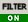
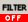

| To limit the entries in the Browser Tree to a selected subset. |
|
Build a filter from the following elements:
|
|
Delete a node in the filter tree using the "delete" key. Turn the filter on  or off  using the buttons in the toolbar to the right of the Browser Tree. |